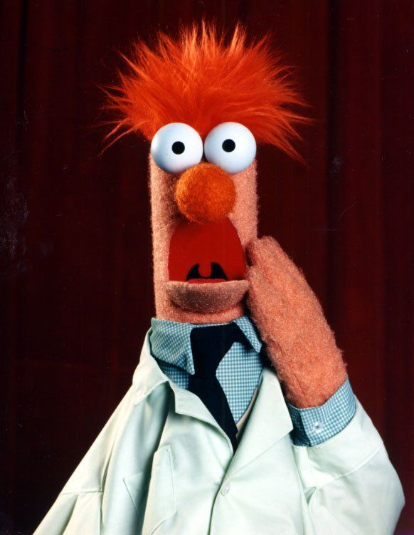
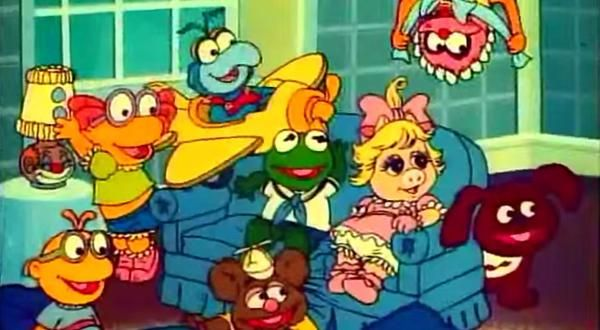

Sejam muito bem vindos! Essa é a primeira prova prática e o objetivo é reproduzir essa página o mais fielmente possível! O tema dela é o programa de TV Muppets. (Fonte usada: Comic Sans MS, tamanho 25pt)
Muppets são uma franquia de mídia americana cujos personagens-título, criados por Jim Henson em 1955, já estrelaram inúmeras séries de televisão, especiais de televisão, telefilme e filmes de cinema. Essas produções quase sempre incluem humanos e muppets convivendo. Os muppets podem ser animais, humanóides, monstros, extraterrestres ou criaturas inventadas. (Fonte usada: SansSerif, tamanho 25pt)
Para quem não se lembra, abaixo há um vídeo dos Muppets (Tamanho 25pt)
Existe uma outra versão do programa conhecida como Muppets Baby.(Fonte usada: Droid Sans, tamanho 25pt)
Era vagamente inspirada numa cena do filme The Muppets Take Manhattan onde a Miss Piggy imagina como seria se ela e Kermit the Frog tivessem crescido juntos. (Fonte usada: Century, tamanho 25pt)
A série retrata versões infantis dos Muppets que vivem juntos num grande
berçário, sob os cuidados de uma babá (nunca se chega a saber o que
aconteceu com seus pais).
A Babá aparece em quase todos os episódios, mas o seu rosto nunca é
mostrado. Em vez disto, a personagem é vista da perspectiva dos bebês,
com a sua saia cor-de-rosa e as suas características meias listradas com
verde e branco
Veja na lista a seguir o 3 muppets mais populares.
Top 3 muppets mais populares:
A seguir, há uma lista de alguns filmes dos Muppets
| Filmes | Ano | Plataforma |
|---|---|---|
| Muppets o Filme | 1979 | Cinema |
| The great Muppet | 1981 | Cinema |
| The muppets | 2011 | Cinema |
| Muppet Classic Theater | 1994 | Home Video |